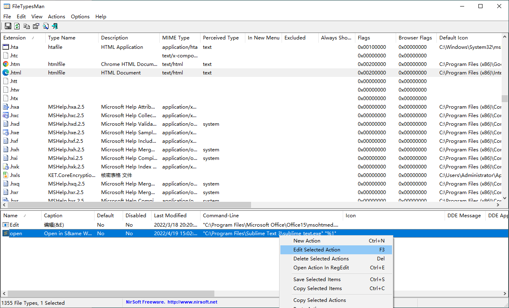
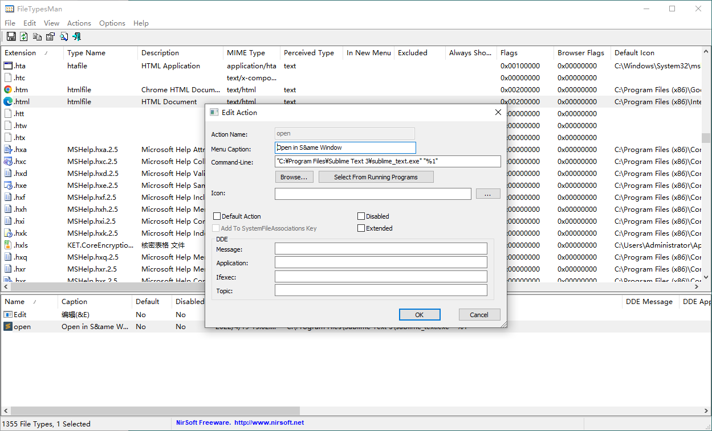
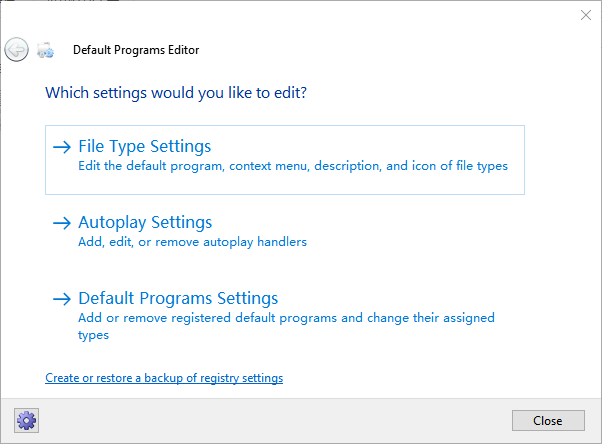
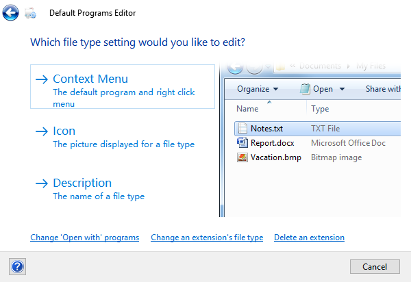

Sublime 关联常见文本格式后难以通过图标分辨文件类型的应对
条评论Windows 平台，Sublime 关联常见文本格式后，所有被关联格式的文件图标都变成了 Sublime 的 Logo，导致难以通过图标分辨文件类型，这背离了文件图标分辨文件的初衷。那么如何使文件既可以用 Sublime 打开，又有清晰明了易于分辨的图标呢？今天终于决定腾出时间来应对这个问题。
操作
借助程序 FileTypesMan 的实现
原理
2022/4/19 更新：在 Win10 上实测无效，即目前没有以知的好的方法解决这一问题
「关联程序」和「打开命令」是两个不一样操作。关联到一个「关联程序」的话就会共享图标；而设置「打开命令」并不影响关联程序。所以先把所有要改的格式的 sublime 关联去掉，然后通过关联到喜欢的程序改其图标，最后把 open 命令改成 sublime.exe %1 就可以了。
步骤
下载程序 FileTypesMan | FileTypesMan for x64 后运行在左侧第一列「Extension」找到对应的文件类型，或者直接输入即可快速定位，如这里找.html就输入.html即可右键点击该行，在弹出的菜单中选择「Edit Selected File Type」或按快捷键 F2，或双击该行，打开文件类型编辑窗口

清空「User Choice」输入框中的内容后点击「OK」关闭文件类型编辑窗口在下侧找到「open」命令的行右键单击，在弹出的菜单中选择「Edit Selected Action」或按快捷键 F3，或双击该行，打开动作编辑窗口

在「Command-Line」输入框中输入"C:\Program Files\Sublime Text 3\sublime_text.exe" "%1"后点击「OK」关闭动作编辑窗口

借助程序 Default Programs Editor 的实现
下载程序 Default Programs Editor 后运行
点击「File Type Settings」

- 点击「Icon」

- 借助右上角的检索框在下方的文件类型清单中找到对应的文件类型，单击选中

点击「Next」按钮
单击「Browse…」按钮，然后选中喜欢的图标，点击确定


点击右下角按钮「Save Icon」即可应用
[可选]或者也可点击’Save Icon’按钮旁的下拉三角形图标，选中「Save to .reg file…」按钮，再选择保存目录，即可得到后缀为.reg 的文件，方便传给别的电脑使用，使用时只许双击运行再点确定即可。
我看了下保存的.reg 文件是这样的：1
2
3
4
5
6
7
8Windows Registry Editor Version 5.00
; Created with Default Programs Editor
; http://defaultprogramseditor.com/
; Edit File Type Icon
[HKEY_CURRENT_USER\Software\Classes\Applications\sublime_text.exe\DefaultIcon]
@="C:\\WINDOWS\\system32\\imageres.dll,97"目测这个只是改了 Sublime 的图标，而不是我最开始希望的不同类型文件有各自不同的图标。
其它说明
通过修改注册表项 HKEY_CURRENT_USER\Software\Microsoft\Windows\CurrentVersion\ Explorer\FileExts\.txt\UserChoice 的项 ProgId 的值为想要关联程序的方式不好操作。
首先这个值的设定不是设定为完整文件名就可以的，比如 notepad 设的是 txtfile，我估计这是个引用值，实际值指的是\HKEY_CLASSES_ROOT\txtfile？纯猜测。
其次，单改了项 ProgId 的值还不行，它还有个校验值保存在同路径下的项 Hash 中，而这个 Hash 的值据说可以通过软件 SetUserFTA.zip取得，我试了下发现并不好使。比如作者给出的将 PDF 的默认程序设为 Acrobat Reader 的命令 SetUserFTA.exe .pdf AcroExch.Document.DC 中，使用 AcroExch.Document.DC 指代 Acrobat Reader，这个映射关系我没找到，好比我拿到国民党通讯兵的电台却没有密码本，也是没法使用的。
参考文献
[1]erikaIT.windows 注册表文件关联机制[EB/OL].https://blog.csdn.net/erikaIT/article/details/71637167,2017-05-11.
[2]woshub.com.Changing Default File Associations in Windows 10 via GPO[EB/OL].http://woshub.com/managing-default-file-associations-in-windows-10/,2020-01-21.
[3]Christoph Kolbicz.SetUserFTA: UserChoice Hash defeated – Set File Type Associations per User or Group on Windows 8/10 and 2012/2016/2019[EB/OL].https://kolbi.cz/blog/2017/10/25/setuserfta-userchoice-hash-defeated-set-file-type-associations-per-user/,2017-10-25.
[4]Rimo.Sublime Text 3 修改配色方案和关联文件类型的图标[EB/OL].https://segmentfault.com/q/1010000000589849,2017-12-23.